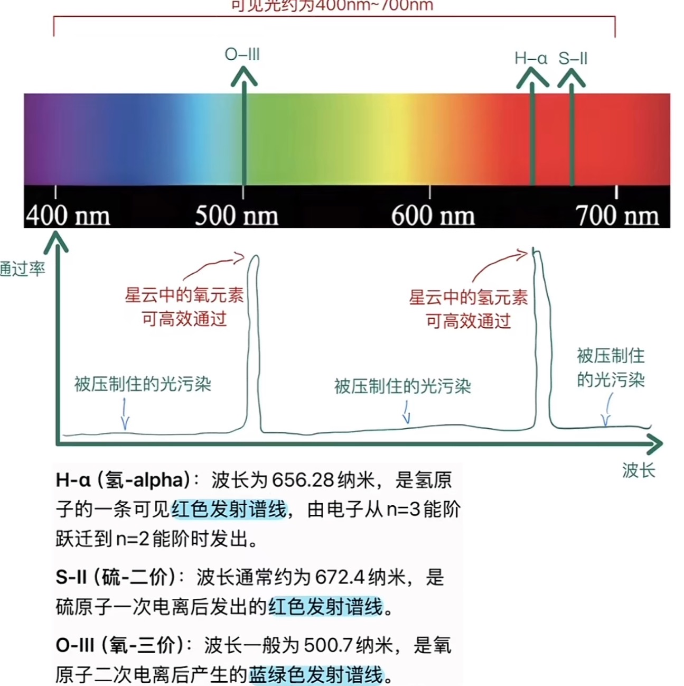

一些碎碎念...
这个 capstone 真的是相当曲折。 我本来是想就学习一些天文知识然后去拍片， 但是我又需要一个网站来承载我的照片和故事， 所以我又需要学习如何去搭建和维护一个网站。 后来我又想拍个视频来记录这一切， 所以我又需要去学习达芬奇。 最后我还想去川西拍摄最纯净的天空， 所以我又去考了个驾照……
天文相机到底哪里比普通相机好了？
有些朋友可能会疑惑，都是可以拍摄照片的相机，我们为什么不直接使用单反或者微单接在主镜上进行拍摄呢，而是要使用专门的天文冷冻相机或者使用拿普通机器改装的冷冻相机？
这涉及到深空摄影的本质————长曝光。我们知道，拍摄的本质就是记录光线在时间和空间上的分布，一张照片本质上来讲就是很多个光点的集成。
但是，在短短几秒内就得到足够的光在深空摄影中很困难。因为我们拍摄的对象远在可能无数光年以外，并且还有地球大气层阻碍着光线的传播。所以在有限的时间内，我们所能记录到的光点将会很少。
因此，我们需要拉长曝光的时间，让相机有足够的时间来接受到足够的光点，通常一张不错的星云照片的总曝光时间会在几个小时左右。
不过，问题也就随之而来：普通相机的 CMOS 在长时间工作时会产生大量热噪声。 这些噪点并不是来自星云或星空本身，而是传感器在通电、升温过程中随机产生的电子信号。
在日常摄影中，单张曝光往往只有几分之一秒到几秒钟，这些热噪声几乎可以忽略； 但在深空摄影动辄几十秒、几分钟，甚至上百张连续曝光的情况下， 热噪声会被不断累积，严重影响画面的纯净度。
天文冷冻相机的核心优势，就在于主动温控。 通过半导体制冷模块，将 CMOS 稳定在一个远低于环境温度的状态， 从而大幅降低热噪声的产生，进而得到更好的成像质量。
仅此而已吗？
不尽然，天文相机还有一个明显的优势，那就是对红外光的接受能力。

评论